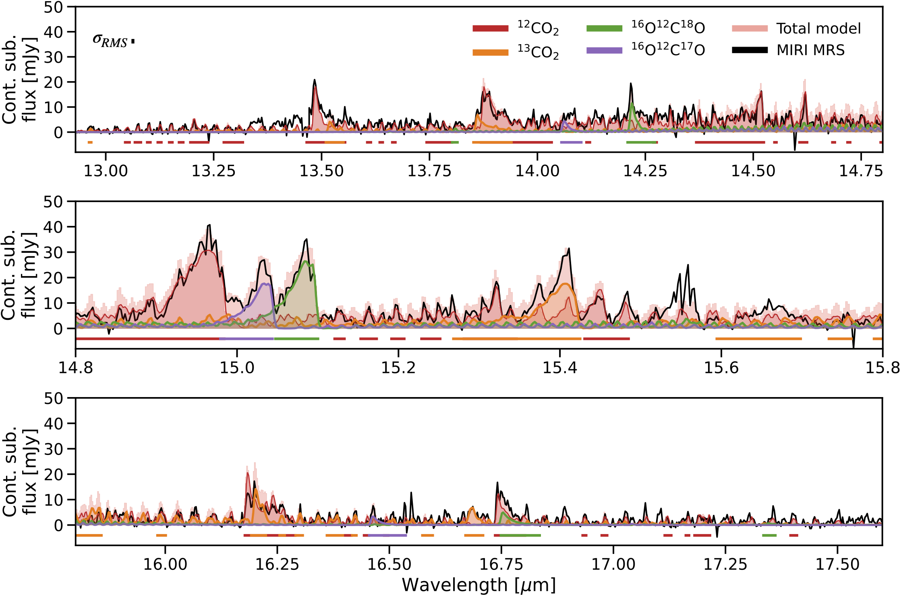
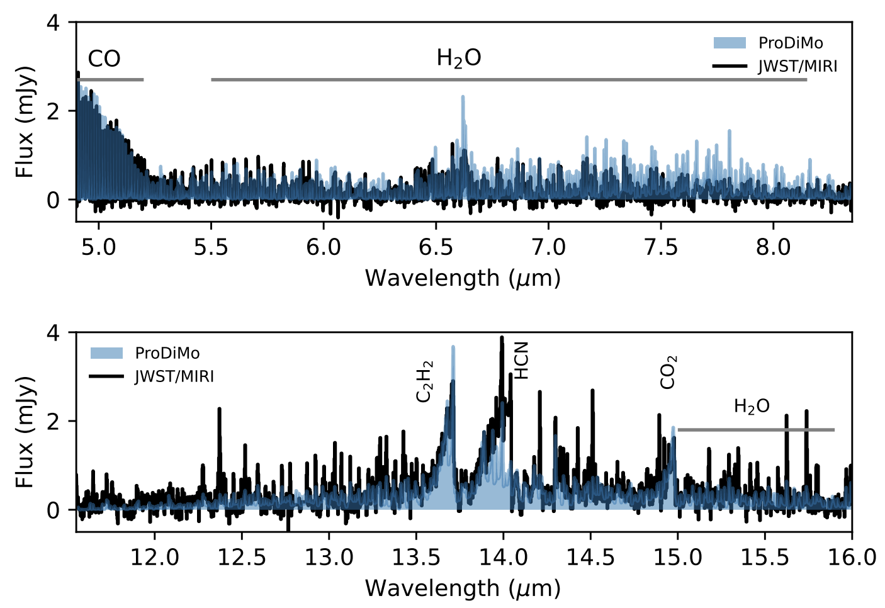
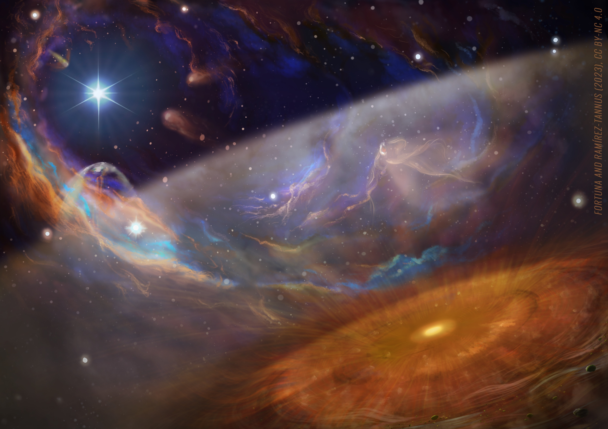

XUE Sample Overview
XUE Sample Overview
This paper presents
the overview of the full XUE sample. The sample contains 12 disks around stars of masses between
1 and 4 solar masses in NGC6357. Despite being more massive, the XUE stars host disks with
molecular richness comparable to isolated T Tauri systems. Most disks display water emission
from the inner disk. The absence
of strong line fluxes and other
irradiation signatures suggests that the XUE disks have been truncated by external UV photons.
However, this truncation does not appear to significantly impact the chemical richness of their
inner regions. These findings indicate that even in extreme environments, IMTT disks can retain
the ingredients necessary for rocky planet formation.
 Most stars and planetary systems form in environments where the UV radiation from massive stars
is very strong. In order to really understand the observed demographics of planetary systems it
is important to study the effect that these environments have on planet-forming disks. The
problem is that massive star forming regions are rare, distant, and obscured by gas and dust
making it difficult to detect the inner regions (< 10 au) of disks around solar-like stars,
where planets like Earth are expected to form. Thanks to the unprecedented sensitivity of
JWST, we are now able to do those very challenging observations. Within the eXtreme UV
Environments (XUE)
collaboration (PIs: Ramírez-Tannus & Bik) we aim to determine the
physical and chemical
properties of planet-forming
disks in extreme environments.
Most stars and planetary systems form in environments where the UV radiation from massive stars
is very strong. In order to really understand the observed demographics of planetary systems it
is important to study the effect that these environments have on planet-forming disks. The
problem is that massive star forming regions are rare, distant, and obscured by gas and dust
making it difficult to detect the inner regions (< 10 au) of disks around solar-like stars,
where planets like Earth are expected to form. Thanks to the unprecedented sensitivity of
JWST, we are now able to do those very challenging observations. Within the eXtreme UV
Environments (XUE)
collaboration (PIs: Ramírez-Tannus & Bik) we aim to determine the
physical and chemical
properties of planet-forming
disks in extreme environments.
Results

The CO2-rich terrestrial planet-forming region of an externally irradiated Herbig
disk
In this paper, our
PhD student Jenny Frediani
presents the spectrum of XUE10. A Herbig disk with a very unusual inner disk. Jenny discovered
strong CO2 gas signatures, including four distinct isotopologues, which is a first in such a
disk. We propose that the mid-infrared spectrum of XUE 10 is explained by H2O removal either via
advection or strong photo-dissociation by stellar UV irradiation, and enhanced local CO2
gas-phase production. Outer disk truncation supports the observed CO2-H2O dichotomy. A CO2 vapor
enrichment in 18O and 17O can be explained by means of external UV irradiation and early on
delivery of isotopically anomalous water ice to the inner disk.

Thermochemical Modeling Suggests a Compact and Gas-Depleted Structure for a Distant,
Irradiated Protoplanetary Disk
In this paper our
postdoc Bayron Portilla-Revelo presents the
first full thermochemical model of XUE1. We found that the XUE 1 disk
must be small and severely depleted of gas due to the UV-driven photoevaporation. Nevertheless,
there should be enough material left to form the equivalent of, at least, ten
Mercury-like planets! Our findings imply that the innermost regions of protoplanetary
disks are resilient to external irradiation and capable of retaining the basic ingredients
needed for planet formation.

First Molecular inventory of an extremely irradiated Protoplanetary
Disk
In the first
paper of our collaboration, we present the detection of water, carbon dioxide and other
complex molecules in the terrestrial planet-forming zone of a solar-like star located next to
some of the most massive stars in the Galaxy. This is the first time that such molecules are
detected under these conditions. This is unexpected and exciting, because it tells us that the
conditions for planet
formation and the ingredients for life are present even under these extreme conditions!
Image credit:
Fortuna & Ramírez-Tannus 2023
News
Here is a list of press releases, news items, radio, and TV coverage related to our results:
News Items
- El Espectador: Señales para otra tierra (by Paula Casas Mogollón).
- The New York Times: A Beginner’s Guide to Looking at the Universe (by Kate LaRue).
- Tagesschau: Mehr erdähnliche Planeten als gedacht?
- Universe Today: JWST Reveals Protoplanetary Disks in a Nearby Star Cluster
- El Colombiano: Astrónomos de la U de A en equipo que analiza resultados del James Webb
TV and Radio coverage
- sat NANO vom 1.: Dezember 2023: Ist das ganze Universum voll mit Leben?
- SWR2 Wissen: Überraschende Ergebnisse: Wohl mehr erdähnliche Planeten im All als gedacht
- DW: Science Unscripted Podcast: What was it like when the Earth formed?
- Radio SWR2: JWST Es gibt wohl mehr erdähnliche Planeten im Universum als vermutet
- RTP (Portugal): Bom dia Portugal | Fim de semana (Min. 45:30)
Press releases
-
2025:
- Space.com: James Webb Space Telescope discovers planets forming in space's most punishing environments
- PennState: Unveiling the secrets of planet formation in environments of high UV radiation 2023:
- ESA: Webb study reveals rocky planets can form in extreme environments
- NASA: Webb study reveals rocky planets can form in extreme environments
- STScI: Webb Study Reveals Terrestrial Planets Can Form in Extreme Environments
- MPIA: Observations of planetary cradles find water and conditions for forming Earth-like planets even in harsh environments
- Stockholm University: Observations of planetary cradles reveal rocky planets can form in extreme environments
- NOVA: Aardachtige planeten kunnen zelfs ontstaan onder barre omstandigheden
- PennState: Observations of planetary cradles reveal rocky planets can form in extreme environments
- QMUL: New James Webb Space Telescope observations reveal potential for earth-like planets in harsh environments
- UdeA: De una región hostil del Universo nacen planetas similares a la Tierra